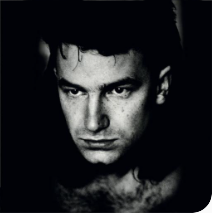
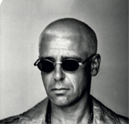

U2 est composé de quatre musiciens irlandais : Bono, The Edge, Adam Clayton et Larry Mullen Jr.

Chant, paroles
Paul David Hewson, dit Bono, est le chanteur et principal parolier de U2. Sa voix et ses engagements humanitaires ont largement contribué à faire du groupe une référence mondiale.
En savoir plus >
Guitare, claviers, chœurs
David Howell Evans, dit The Edge, est le guitariste de U2. Reconnaissable à son jeu atmosphérique et à ses sonorités innovantes, il façonne le son unique du groupe.
En savoir plus >
Basse
Adam Clayton est le bassiste de U2. Véritable pilier rythmique, il apporte au groupe une base solide et un jeu mélodique, contribuant à l'équilibre de leurs compositions.
En savoir plus >Batterie
Larry Mullen Jr. est le batteur de U2 et l'un des fondateurs du groupe. Son jeu précis et puissant donne à la musique de U2 son énergie et son ampleur caractéristiques.
En savoir plus >